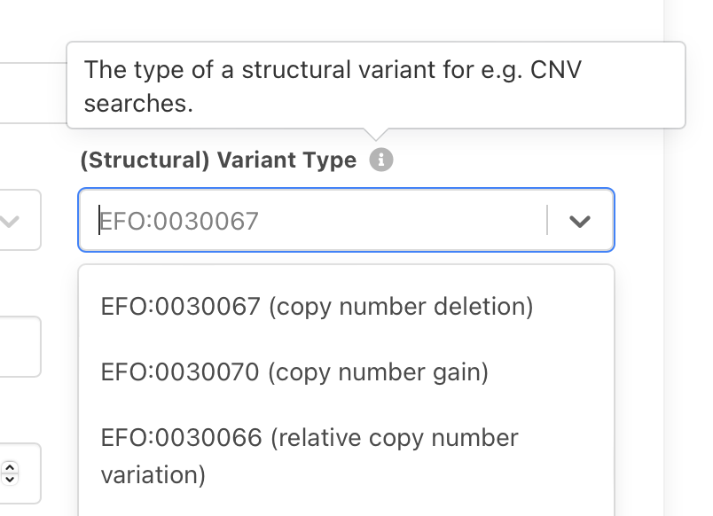

Classifications, Ontologies and Standards¶
The Progenetix resource utilizes standardized diagnostic coding systems, with a move towards hierarchical ontologies. As part of the coding process we have developed and provide several code mapping resources through repositories, the Progenetix website and APIs.
Additionally to diagnostic and other clinical concepts, Progenetix increasingly uses hierarchical terms and concepts for the annotation and querying of technical parameters such as platform technologies. Overall, the Progenetix resource uses a query syntax based around the Beacon v2 "filters" concept with a CURIE based syntax.
List of filters recognized by different query endpoints¶
Public Ontologies with CURIE-based syntax¶
| CURIE prefix | Code/Ontology | Examples |
|---|---|---|
| NCIT | NCIt Neoplasm1 | NCIT:C27676 |
| HP | HPO2 | HP:0012209 |
| PMID | NCBI Pubmed ID | PMID:18810378 |
| geo | NCBI Gene Expression Omnibus3 | geo:GPL6801, geo:GSE19399, geo:GSM491153 |
| arrayexpress | EBI ArrayExpress4 | arrayexpress:E-MEXP-1008 |
| cellosaurus | Cellosaurus - a knowledge resource on cell lines 5 | cellosaurus:CVCL_1650 |
| UBERON | Uberon Anatomical Ontology6 | UBERON:0000992 |
| cbioportal | cBioPortal9 | cbioportal:msk_impact_2017 |
Private filters¶
Since some classifications cannot directly be referenced, and in accordance with the upcoming Beacon v2 concept of "private filters", Progenetix uses additionally a set of structured non-CURIE identifiers.
For terms with a pgx prefix, the identifiers.org resolver will
| Filter prefix / local part | Code/Ontology | Example |
|---|---|---|
| pgx:icdom-... | ICD-O 37 Morphologies (Progenetix) | pgx:icdom-81703 |
| pgx:icdot... | ICD-O 37 Topographies(Progenetix) | pgx:icdot-C04.9 |
| TCGA | The Cancer Genome Atlas (Progenetix)8 | TCGA-000002fc-53a0-420e-b2aa-a40a358bba37 |
| pgx:pgxcohort-... | Progenetix cohorts 10 | pgx:pgxcohort-arraymap |
Diagnoses, Phenotypes and Histologies¶
NCIt coding of tumor samples¶
- based on NCIt neoplasm core
but now extended based on the whole "neoplasia" subtree of the NCI Thesaurus (
NCIT:C3262and child terms) - first implementation of NCIt concepts mapping in January 2017, then for a subset of arrayMap samples
- now providing ICD-O 3 <=> NCIt mappings through the ICDOntoologies mapping project with a front-end an API on the website
Current NCIt sample codes¶
ICD coding of tumor samples¶
The Progenetix resource primarily used the coding schemas of the _International Classification of Diseases in Oncology__ (3rd edition; "ICD-O 3"), to classify all biosamples for which experimental data is available. Users can get a list of ICD-O 3 codes in the Progenetix format through Progenetix collations.
The mappings used here for the ICD morphology codings (mapped to ICDMORPHOLOGY and ICDMORPHOLOGYCODE) are derived from the original source file last accessed on 2016-08-18 from the WHO. The primary codes have been updated from the 2011 update document ICDO3Updates2011.pdf.
Current ICD-O sample codes¶
- ICD-O Morphologies
- ICD-O Topographies
UBERON codes¶
The organ sites of the original coding have been mapped to UBERON. The mappings are detailed in the related icdot2uberon project.
Current UBERON sample codes¶
Genomic Variations (CNV Ontology)¶
The Progenetix repository contains predominantly copy number variants. While we
had limited CNV type annotations to the "minimum information content" - i.e. using
DUP and DEL categories for indicating relative genomic copy number gains or losses,
respectively, from 2022 Progenetix will move to a richer CNV classification in line
with "common use practices". As part of the ELIXIR h-CNV community and contributors
to the GA4GH Beacon project and Variant Representation Specification (VRS)
we have co-developed a "CNV assessment ontology" which in January 2022 has been
accepted into the Experimental Factor Ontology (EFO)
and is under discussion at Sequence Ontology (SO)
and for use in VRS.
In January 2022 we switched the internal representation of CNV states to EFO codes
and implemented the respective search functionality in the bycon package. Future
data updates will gradually add the more granular classes such as EFO:0030073
where they apply.
id: EFO:0030063
label: copy number assessment
|
|-id: EFO:0030064
| label: regional base ploidy
| |
| |-id: EFO:0030065
| label: copy-neutral loss of heterozygosity
|
|-id: EFO:0030066
label: relative copy number variation
|
|-id: EFO:0030067
| label: copy number loss
| |
| |-id: EFO:0030068
| | label: low-level copy number loss
| |
| |-id: EFO:0030069
| label: complete genomic deletion
|
|-id: EFO:0030070
label: copy number gain
|
|-id: EFO:0030071
| label: low-level copy number gain
|
|-id: EFO:0030072
label: high-level copy number gain
note: commonly but not consistently used for >=5 copies on a bi-allelic genome region
|
|-id: EFO:0030073
label: focal genome amplification
note: >-
commonly used for localized multi-copy genome amplification events where the
region does not extend >3Mb (varying 1-5Mb) and may exist in a large number of
copies
Geolocation Data¶
Provenance and use of geolocation data¶
Geographic point coordinates are assigned to each sample after review of existing information from associated publications or repository information for their ”best available” geographic origin using a precedence of:
- sample specific data (e.g. from article text)
- experiment location
- first author proxy
For publications w/o accessible sample data in general the "author proxy" is being used, unless specific annotations have been found in the article.
A more detailed discussion of the problems and benefits of geographic provenance tagging can be found in Carrio-Cordo et al., DATABASE 2020.
Geolocations Service¶
The Progenetix API provides a service for retrieving geographic coordinates as point coordinates, for the majority of cities.
GeoLocation schema¶
The current version of the JSON Schema data schema for the geolocation object can be accessed through the Progenetix services API.
"geometry": {
"coordinates": [
8.69,
49.41
],
"type": "Point"
},
"properties": {
"ISO3166alpha2": "DE",
"ISO3166alpha3": "DEU",
"city": "Heidelberg",
"continent": "Europe",
"country": "Germany"
},
"type": "Feature"
-
National Cancer Institute Thesaurus Neoplasm NCIt Neoplasm ↩
-
Supported identifiers include platforms(GPL), series(GSE) and samples(GSM).GEO Overview ↩
-
Supports ArrayExpress Accession ID. ArrayExpress browse ↩
-
Cellosaurus accession ID. ↩
-
International Classification of Diseases for Oncology, 3rd Edition ICD-O-3 ↩↩
-
Supports cBioPortal Study ID. ↩
-
Cohorts defined in Progenetix involving a collection of related samples. Currently includes (add
pgx:cohort-): arraymap, 2021progenetix, DIPG, TCGA, TCGAcancers, gao2021signatures. ↩